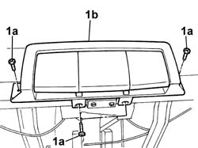
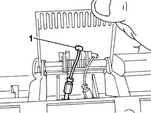
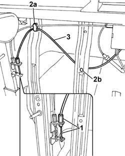

7050A75 Rear seat sliding control CABLE - R.R.
- Path
- Procedures > 70 FITTINGS > 7050 REAR SEATS > 7050A rear seat assembly > 7050A75 Rear seat sliding control CABLE - R.R.
- Kind
- repair procedure (removal / refitting; the operation number is the code)
- Applies to
- all engines; all production periods
- Interactive page
- https://sloeber94.github.io/elrnDB-fPnd/en/#/2753280
Applies to: all engines; all production periods
 Removing
Removing
 Refitting
Refitting7050C05 Single sliding REAR SEAT with split folding squab - R.R .
7050C11 Single CUSHION of sliding rear seat - S.R.
1. Undo the bolts (1a) fixing the movement control handles (1b).

Applies to: all engines; all production periods
1. Lift up the sliding control handle and disconnect the seat sliding control cable concerned.

Applies to: all engines; all production periods
1. Disconnect the seat sliding control cable from the guide release device.
2. Release the sliding control cable from the band (2a) and from the band (2b).
3. Remove the seat sliding control cable.

Applies to: all engines; all production periods
Refitting
RemovingFit the seat sliding control cable and connect it to the guide release device.
Lift up the sliding control handle and connect the seat sliding control cable.
Secure the seat sliding control cable to the bands on the cushion frame.
Position the seat movement control handles in the housing on the cushion frame and tighten the fixing bolts.
Check the operation of the release device on the guides.
7050C11 Single CUSHION of sliding rear seat - S.R.
7050C05 Single sliding REAR SEAT with split folding squab - R.R .